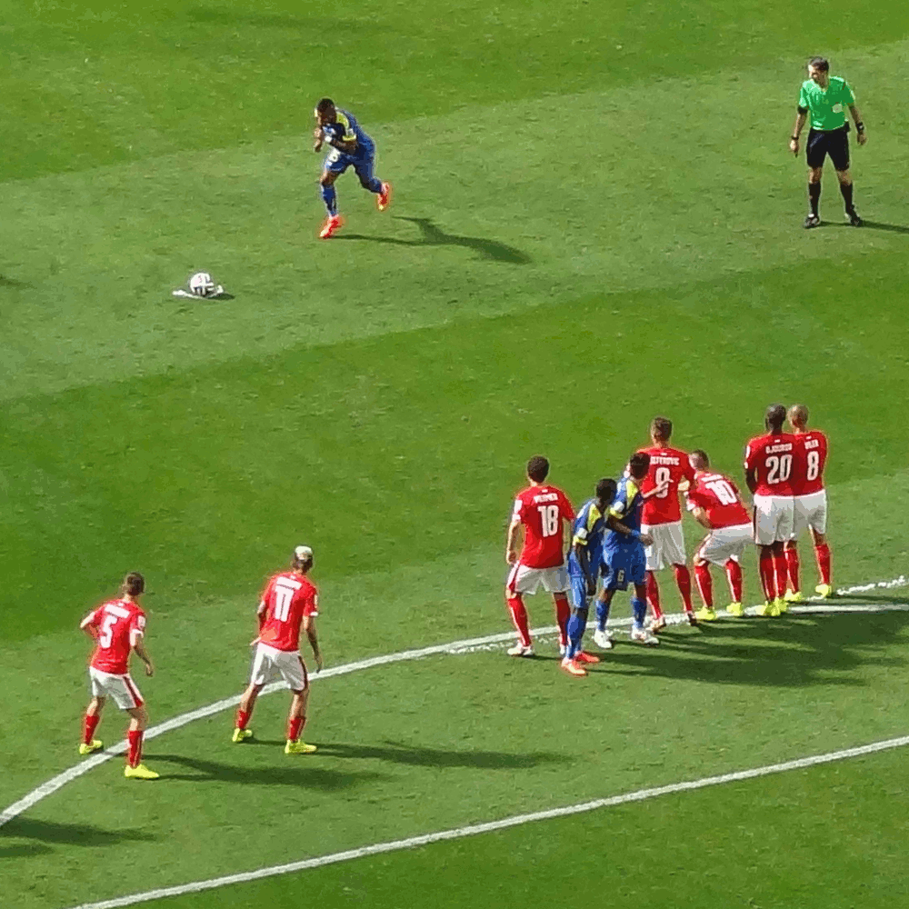

GIF Format Example

About This Image
This GIF image shows a player for Ecuador taking a freekick against Switzerland in the 2014 World Cup. The players defending the kick jump up to block it but the ball goes over them.
Why JPG Format?
GIF format works perfectly for a shot like this because it is able to store multiple frames, showing the stages of the kick and where the ball goes. This creates an animation of the moment without taking up as much space as a video.
Image source: Wikimedia
Image source: SportsEvents365